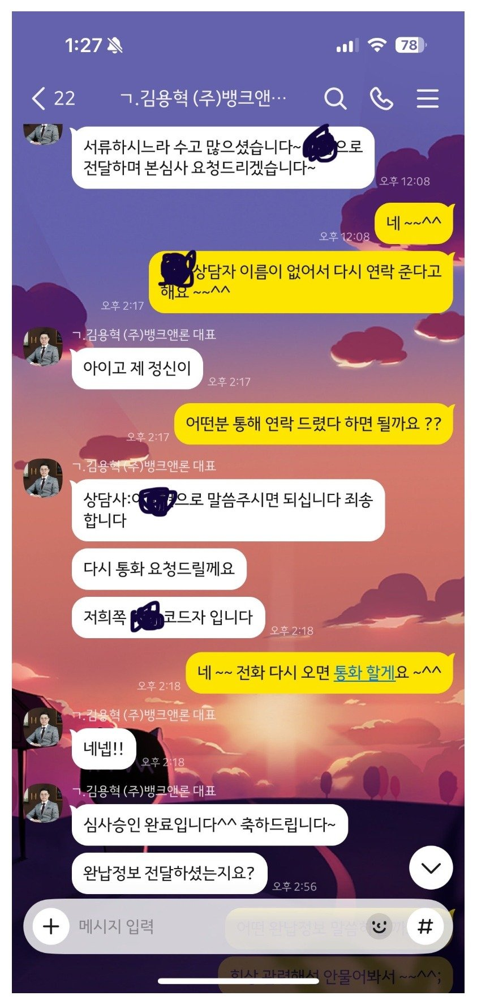
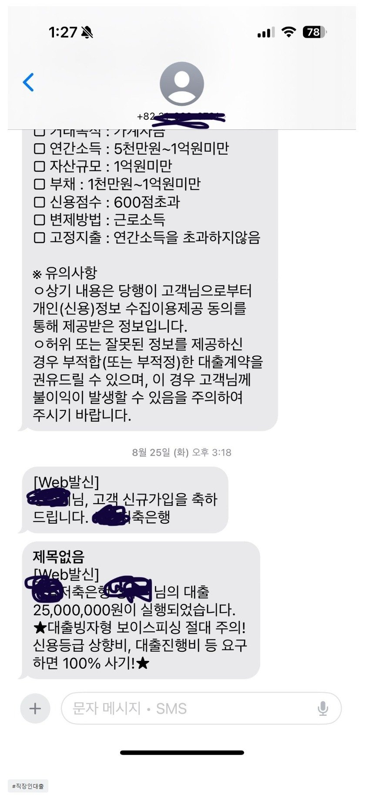

[회생면책자대출] 김용혁이사님 이현섭과장님 덕분에 살았어요 ~
재직형태 : 직장인
재직기간 : 1년 9개월
사대보험 : 유
소득 : 연 6천
신용등급 : 회생면책 직후라 높지 않음
채무내역 : 기존 회생 중 대부 2건 1500
필요서류 : 초본, 통장서류 3개월 내역, 건강보험 자격득실 , 건강보험납부확인서, 신분증, 통장사본
뱅크랜 론을 알고 김용혁이사님 이현섭 과장님통해서 다시 재 대출을 실행 했어요 ~
회생중에 여기서 대부 두건을 실행했었고 이번에 회생 면책 되면서 두건 대환 하고 필요지금이 더 있어서 기존 1500대환에 1000추가 하여 한건으로 묶어서 대출 실행 받았어요 ~~
금리도 낮아지고 한건으로 묶여서 관리하기도 좋을것같아요 ~~
이번에도 감사합니다 ^^


https://cafe.naver.com/cityman88/312136